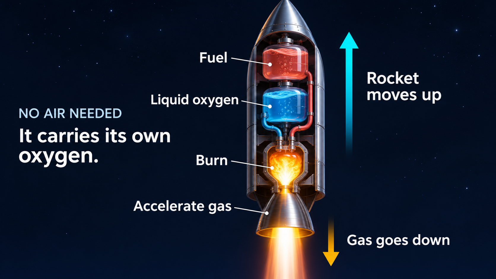

01 / A MACHINE YOU CAN SEE INSIDE
How do rockets work in empty space?

WHY THIS GETS A SLOT
The misconception becomes the picture.
A rocket in empty space immediately raises the question. The cutaway reveals the missing pieces: oxygen aboard, gas going out, and the rocket going the other way.
The thing to rememberIt carries what it burns. It moves by throwing gas backward.
Science reference: NASA ↗